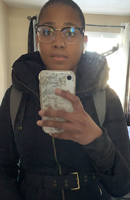
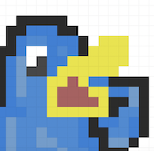

Hi there, my name is Naomi Fiogbe and I am a 3rd year university student. Today I am making an attempt at creating a personal website for myself that is focused on enstablishing who I am as a person, student, daughter, sister and friend. I guess you could say that I am a total narcissist since I absolutely LOVE talking about myself SOOO damn much (just kidding :P).

I am currently attending the University of Alberta and obtaining a specialization degree in Cellular, Mollecular, Developmental Biology. In all honesty I dont even know why I am pursuing a degree in this program for a career that I know I no longer desire. Im going to focus on transferring to computer science so that I can pursue a career in the tech industry as a software engineer + designer at a FAANG corporation. While I dont know if this will be something I am passionate about, I do know that it will at least allow me to make good money from the comfort of my home and provide a good work-life balance.
Some people (*cough cough* Maeva) would tell you that I like to spend waste my time on irrelevant and useless shit like watching lengthy TV series, sleeping till noon, and bieng depressed for no fucking reason at all (I mean Gary Vee would say that the best time to live my life and increase my socioeconomic status would be my 20s, but sometimes it doesn't feel that way). I know that I need to stop spending wasting my time enabling these self-destructive and harmful behaviour.
If I'm bieng completely and brutally honest, I like creating! Whether it is food, content, or art; I know that at heart I am a natural born creator and innovator. I enjoy playing around with flavour, texture, color, and different mediums when it comes to producing something entirely left field.
